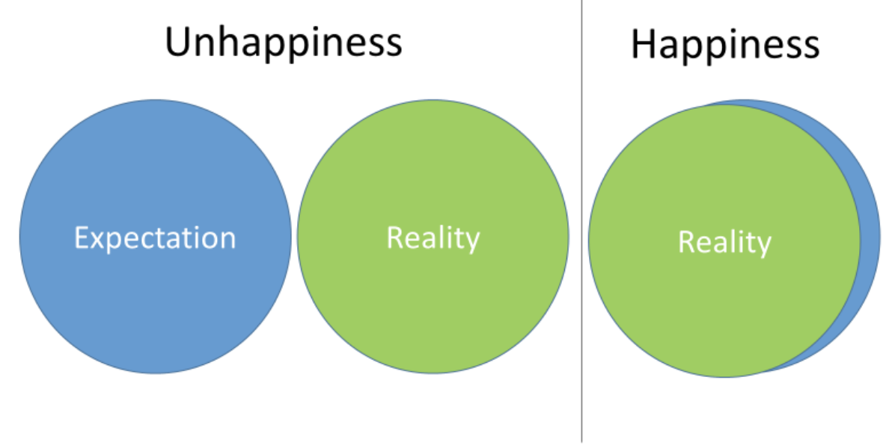

We believe that in life there are 2 circles – The first circle is our expectation and the second circle is our reality. When the 2 circles completely overlap is when we are the happiest. See Graphic below:
Tip:Motivational Expert and personal coach to some of the world’s most successful people Tony Robbins tells us "that we can change our life if we change expectation to appreciation."
Action:Write down 10 things that make you happy and 10 things that make you unhappy. Write your observations in your spiral notebook.